١. الشاشة الأولى
فهيم يلوّح مكان شعار Airbnb، خانة الإيميل، «متابعة»، «أو»، وزرين مربعين لـ Google وApple بأزرار قدراتي الثلاثية الأبعاد، وتحتها الشروط وسياسة الخصوصية. «لاحقاً» باقي تحت، عشان يقدر يكمل ضيف.
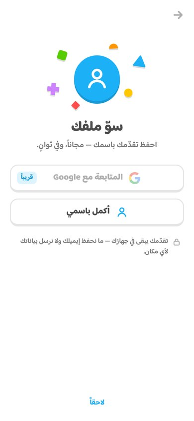
«سوّ ملفك»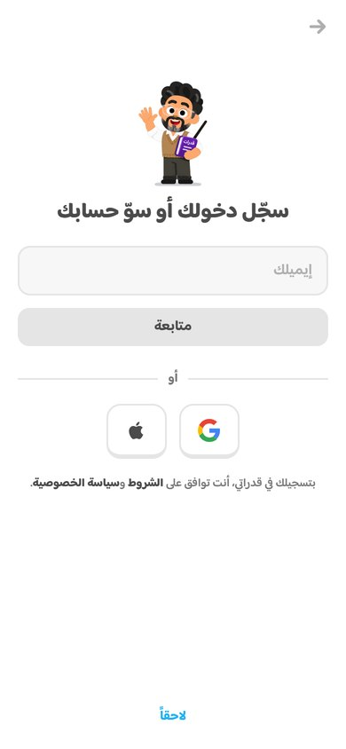
«سجّل دخولك أو سوّ حسابك»٢. لو كتب الإيميل غلط
مثل Duolingo: لو الإيميل ناقص، الخانة تصير حمراء وتهتز ويطلع «الإيميل مو صحيح». ولو فيه حرف غلط في gmail أو hotmail وغيرها، يقترح عليه الإيميل الصح، وضغطة عليه تصلّحه. لو الإيميل سليم بس شكله غلط (gmial.com)، يسأله مرة وحدة، ولو ضغط «متابعة» ثاني مرة يكمل بإيميله زي ما كتبه. إيميلات الجامعات مثل ksu.edu.sa ما يقترح عليها شي.
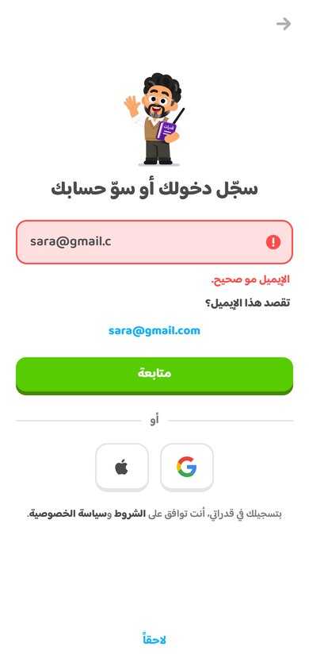
sara@gmail.c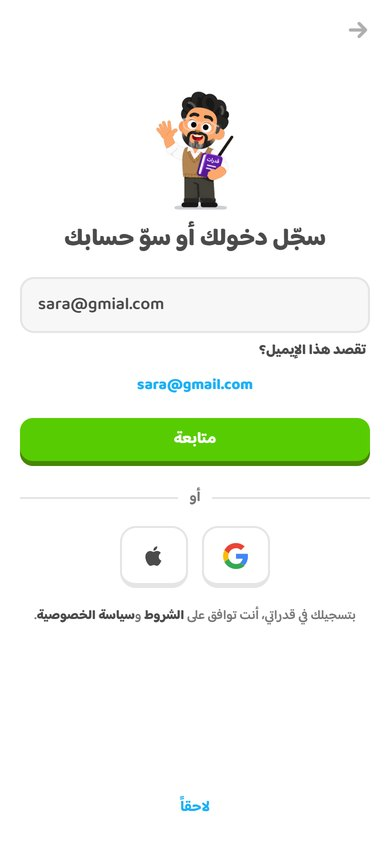
sara@gmial.com٣. لو ما اختار Google ولا Apple: خطوات Duolingo
شريط تقدّم فوق، وسؤال واحد في كل شاشة. الاسم الأول واسم العائلة في خانة وحدة مثل Duolingo، واسم العائلة اختياري. كلمة المرور فيها عين تعرضها وتخفيها، وتحتها «٨ أحرف أو أكثر» تصير خضراء أول ما يوصلها، و«سوّ حسابي» ما يشتغل قبلها. وتحت الزر سطر الشروط.
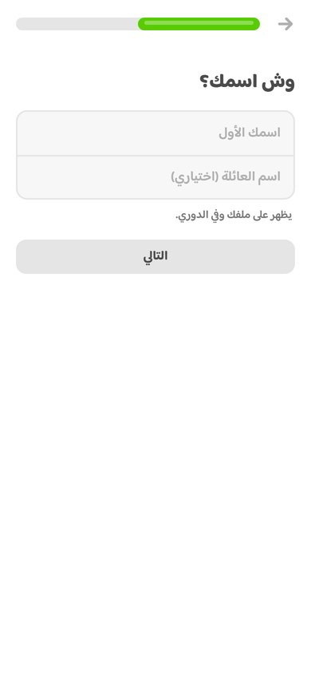
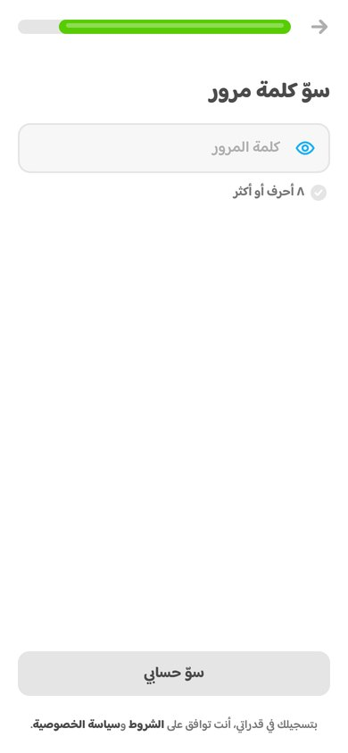
الزر رمادي قبل ٨ أحرف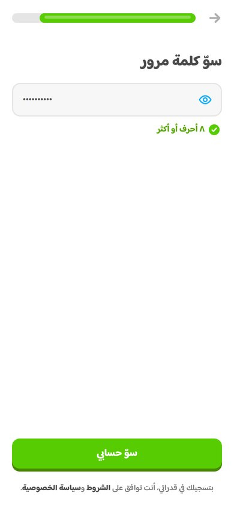
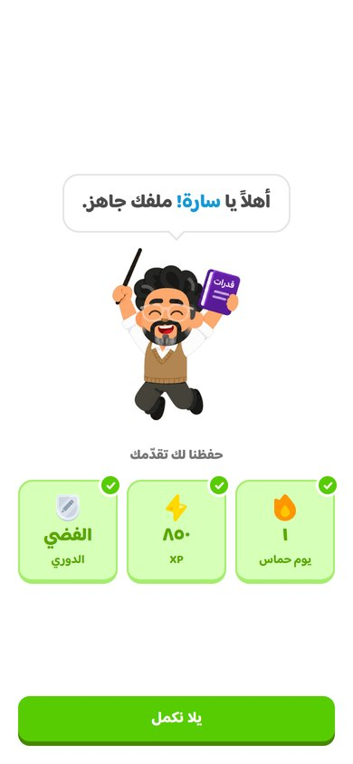
الشاشة الجديدة، تحتجديد: شاشة «ملفك جاهز»
راح الحرف على الدائرة البرتقالية. شاشة التسجيل الأولى وعدته «لا تضيّع تقدّمك!»، فهذي الشاشة توريه إنه انحفظ: فهيم ينط من الفرح تحت فقاعته، وهي تكتب «أهلاً يا سارة! ملفك جاهز.» كلمة كلمة. بعدها تطلع ثلاث بطاقات لاللي كسبه (السلسلة، XP، الدوري)، وكل وحدة تنختم بالأخضر بموجة Duolingo حق الجواب الصح، مع علامة صح وصوت يعلى درجة كل مرة. بعد الثالثة فهيم ينط مرة ثانية، ويطلع زر «يلا نكمل».
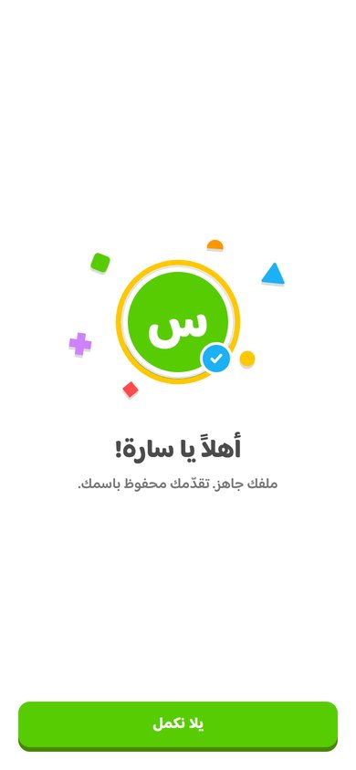
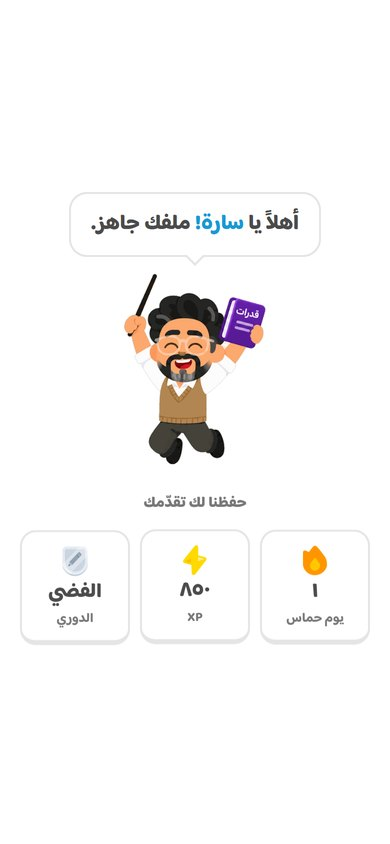
جرّب الحركة: preview.html#signin-done
٤. شروط الاستخدام
صفحة جديدة terms.html بنفس شكل صفحة الخصوصية، والروابط في شاشات التسجيل تفتحها. فيها: من نحن (مستقلين ومو تابعين لقياس)، العمر (أقل من ١٨ بعلم ولي الأمر)، الخدمة مجانية والجواهر ما لها قيمة مالية، حسابك وكلمة المرور، الاستخدام المقبول، المحتوى ورخصة MIT، ما نضمن الدرجة، حدود المسؤولية، تغيير الخدمة، تعديل الشروط، أنظمة السعودية، والتواصل. وأضفت رابطها في أسفل صفحتي «عن قدراتي» والخصوصية، وصارت في خريطة الموقع.
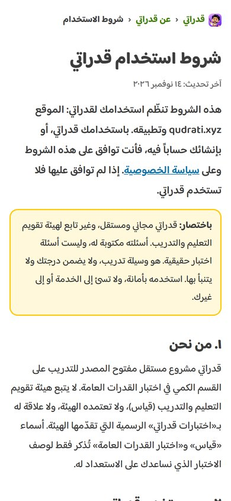
٥. أول سؤال «خمّن بسرعة»: الغلط صار أزرق
لما يغلط في التخمين المجاني، الشريط تحت والجواب اللي اختاره صاروا أزرق بدل الأحمر، وزر «فهمت» أزرق. باقي الأسئلة يبقى غلطها أحمر.
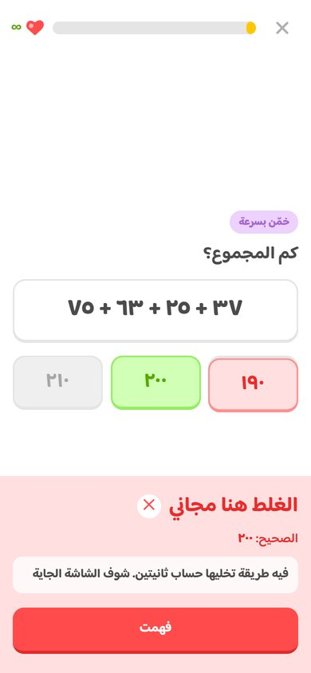
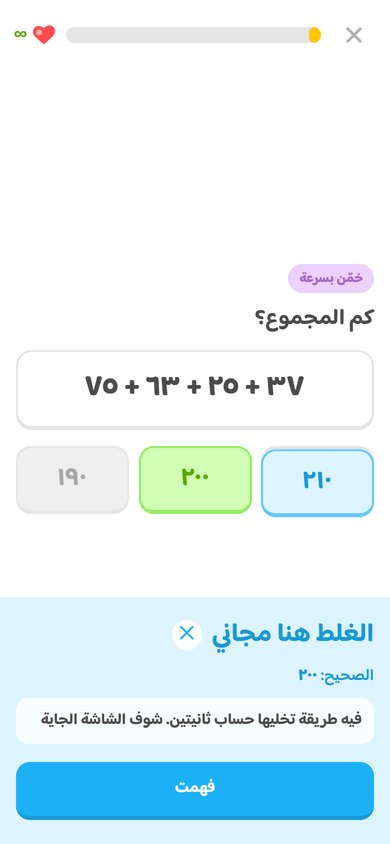
قبل ما ننشرها: لازم تعرف هذا
- قدراتي ما عنده سيرفر. عشان يصير الحساب حقيقي (يسجّل دخول من جوال ثاني ويرجع تقدّمه)، نحتاج خدمة حسابات مثل Firebase أو Supabase. الحين الشاشات تحفظ الاسم والإيميل في الجوال بس، وكلمة المرور ما تنحفظ في أي مكان.
- Google وApple يطلعون «الدخول بحساب … قريباً» لما ينضغطون. Google يشتغل أول ما نحط رقم العميل (Client ID) من Google Cloud، وApple يحتاج حساب مطوّر Apple.
- صفحة الخصوصية تقول الحين «لا نطلب بريداً إلكترونياً». لازم نعدّلها لما نربط الحسابات، وأكتبها لك أول ما نختار الخدمة.
- شروط الاستخدام مكتوبة على اللي يسويه التطبيق فعلاً. بس لأن المشروع بينشر، الأفضل يراجعها شخص قانوني.
- ما رفعت شي للموقع.